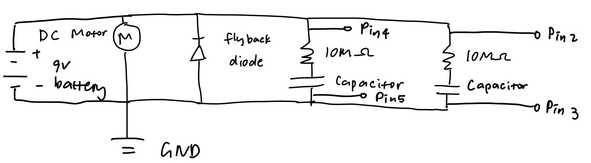
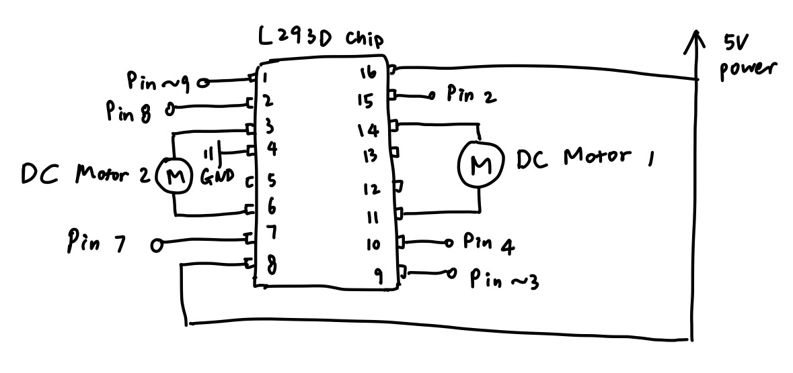

Circuit

For this assignment, I used an ultrasonic sensor, a DC motor with a fan attached to it, a flyback diode, and an Arduino board. If the distance of the closest object detected by the ultrasonic sensor is less than 40 cm, then the motor spins.
According to the DC motor datasheet (https://wiki-content.arduino.cc/documents/datasheets/DCmotor6_9V.pdf), when the power supply is 6 V, the max no load current is 280 mA. Since the battery in the circuit supplies 9 V (which is 1.5 times 6 V), then the current would be 1.5 * 280 mA = 420 mA, which is less than 600 mA, the max current that the transistor can handle.
Code
I found the library and example code for the ultrasonic sensor called “SE04.h” from the ELEGOO website: https://www.elegoo.com/blogs/arduino-projects/elegoo-uno-project-super-starter-kit-tutorial?_pos=12&_sid=6098200f4&_ss=r.
// I found the library and example code for the ultrasonic sensor called “SE04.h” from the ELEGOO website: https://www.elegoo.com/blogs/arduino-projects/elegoo-uno-project-super-starter-kit-tutorial?_pos=12&_sid=6098200f4&_ss=r
#include "SR04.h" // include the ultrasonic sensor library
#define TRIG_PIN 12 // set pin 12 to trigger
#define ECHO_PIN 11 // set pin 11 to echo
SR04 sr04 = SR04(ECHO_PIN,TRIG_PIN); // create an sr04 object for ultrasonic sensor
int distance; // create int variable distance
const int DISTANCE_THRESHOLD = 40; // set constant int DISTANCE_THRESHOLD equal to 40 cm
void setup() { // set up the serial monitor and the transistor base pin
Serial.begin (9600); // allow to communicate with the serial monitor
pinMode(9, OUTPUT); // set the transistor base pin as an output
}
void loop() { // motor spins if an object is within 40 cm of distance
distance = sr04.Distance(); // measure distance from the ultrasonic sensor to the closest object that can be detected
Serial.print(distance); // print variable distance to serial monitor
Serial.println("cm"); // print "cm" to serial monitor and go to next line
delay(50); // wait for 50 ms
if (distance < DISTANCE_THRESHOLD) { // if the detected distance is less than constant int DISTANCE_THRESHOLD
analogWrite(9, 100); // write the transistor load that spins the motor
delay(50); // wait for 50 ms
analogWrite(9, 0); // write the transistor load which leads the motor to stop
}
}
Addtional Questions
Question 1:
According to Figure 12. “SOA, Safe Operation Area” of the data sheet, the maximum current that can flow between pin 2 and pin 3 is 80 A.
https://www.diodes.com/assets/Datasheets/DMT6009LCT.pdf
Question 2:

9V battery datasheet:
https://www.procell.com/wp-content/uploads/2019/09/Datasheet_9V_-PC1604_.pdf
Arduino datasheet:
https://docs.arduino.cc/resources/datasheets/A000066-datasheet.pdf
DC motor datasheet:
https://wiki-content.arduino.cc/documents/datasheets/DCmotor6_9V.pdf
Diode datasheet:
https://wiki-content.arduino.cc/documents/datasheets/Diodes.pdf
Capacitor:
https://docs.rs-online.com/49da/0900766b80fa3a92.pdf
10M Ohm Resistor
https://www.farnell.com/datasheets/3436052.pdf
Question 3:

void setup() {
pinMode(3, OUTPUT); // motor 1: set ENB (pin 3) as OUTPUT
pinMode(4, OUTPUT); // motor 1: set IN3 (pin 4) as OUTPUT
pinMode(2, OUTPUT); // motor 1: set IN4 (pin 2) as OUTPUT
digitalWrite(4, LOW); // make pin 4 LOW
digitalWrite(2, LOW); // make pin 2 LOW
pinMode(9, OUTPUT); // motor 2: set ENA (pin 9) as OUTPUT
pinMode(8, OUTPUT); // motor 2: set IN1 (pin 8) as OUTPUT
pinMode(7, OUTPUT); // motor 2: set IN2 (pin 7) as OUTPUT
digitalWrite(8, LOW); // make pin 8 LOW
digitalWrite(7, LOW); // make pin 7 LOW
}
void loop() {
// both motors 1 and 2 turn forward
analogWrite(3, 255); // enable the right hand side of the chip
digitalWrite(4, HIGH); // make pin 4 HIGH
digitalWrite(2, LOW); // make pin 2 LOW
digitalWrite(9, 255); // enable the left hand side of the chip
digitalWrite(8, HIGH); // make pin 8 HIGH
digitalWrite(7, LOW); // make pin 7 LOW
delay(1000); // wait for 1000 ms
// both motors 1 and 2 turn back
digitalWrite(4, LOW); // make pin 4 LOW
digitalWrite(2, HIGH); // make pin 2 HIGH
digitalWrite(8, LOW); // make pin 8 HIGH
digitalWrite(7, HIGH); // make pin 7 LOW
delay(1000); // wait for 1000 ms
// motor 1 forward and motor 2 back
digitalWrite(4, HIGH); // make pin 4 HIGH
digitalWrite(2, LOW); // make pin 2 LOW
digitalWrite(8, LOW); // make pin 8 LOW
digitalWrite(7, HIGH); // make pin 7 HIGH
delay(1000); // wait for 1000 ms
// motor 1 back and motor 2 forward
digitalWrite(4, LOW); // make pin 4 LOW
digitalWrite(2, HIGH); // make pin 2 HIGH
digitalWrite(8, HIGH); // make pin 8 HIGH
digitalWrite(7, LOW); // make pin 2 LOW
delay(1000); // wait for 1000 ms
}